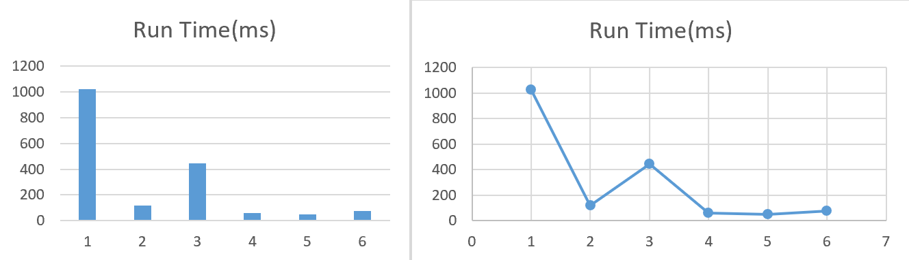

Assignment 2 - Design and Analysis of Algorithms
Objective:
The objective of this assignment is to implement the RNA secondary structure prediction
algorithm.
Introduction:
The code focuses on implementing the dynamic programming algorithm to solve the Computational Biology Problem - Given an RNA Molecule, predict its secondary structure.
Methodology:
Object Oriented Language C++ has been used for this assignment. Any kind of library functions or STL classes have not been used. The implementation was done ensuring that all the constraints of secondary structures are addressed.
Constraints in the algorithm:
- Pairs of bases match up: 'A' matches only with 'U' (and vise versa) and 'G' matches only with 'C'.
- Any secondary structure on the RNA molecule B: b1 b2 ... bn is a set of pairs {(i,j)} where i >= 1, j <= n and satisfies the following rules:
-
No Kinks (Sharp Turns) - The ends of each pair are separated by >=4 inverting bases, i.e., if (i,j) belong to the set S, then i <= j-1.
-
S is a matching pair, i.e., no base appears in more than one pair.
-
There does not exist any pairs, i.e., if (i, j) and (k, l) belong to the set S, then, we can not have i < k< j< l.
Dynamic Programming:
Define OPT(i,j) as the maximum number of base pairs for bi...bj. Initialize OPT(i,j)=0 if i>=j-4. In the optimal secondary structure on b1 b2... bj:
-
If j is not in any pair, use OPT(i, j-1).
-
If j pairs with some t<j-4, the knot condition yields two independent sub problems - OPT(i, t-1) and OPT(t+1, j-1).
Challenge:
How to order from smallest to largest sub-problems? Computing OPT(i,j) involves sub-problems OPT(1,m) where m-l>j-i. This helps us arrange the sub-problems from smallest to largest order.
Recurrence Relation:
OPT(i,j) = maximum{ OPT(i,j-1), maximum over t{1+OPT(i,t-1)+OPT(t+1,j-1)} }
Pseudo Code:
- Initialize OPT(i,j)=0 for all i>=j-4
- For k = 5,6,...,n-1:
- For i = 1,2,...,n-k:
- Set j=i+k
- Compute OPT(i,j) using the recurrence
- End-For
- End-For
- Return OPT(1,n)
Time Complexity:
Here, we have O(n^2) sub-problems. A two-dimensional table (array) is built to store the optimal values of each sub-problems and a nested-for-loop is used for computation. Hence, the time complexity of the algorithm is O(n^2).
C++ Code Explaination:
-
int check_pair(char a, char b): A function to check whether the given base pairs (a,b) can be matched based on Constraint 1 above. It returns 1 if pairing is possible. If not, 0 is returned.
-
int OPT(int i, int j): A recursive function to traverse through the RNA sequence and count the total number of pairs of bases possible. The problem is divided recursively into multiple sub-problems as mentioned above and the variable 'paired' stores the maximum number of pairs possible in the given set of sub-problems. This value is compared to the case where the j'th RNA character does not form a pair and the maximum of the two values is taken. The function returns number of bases pairs possible within the sequence starting from i and ending at j.
-
int init(string s): Function to initialise the Memoization matrix and to remove white spaces if any from the input squence.
-
int main(): Main function of the program that takes in the input, calls the other user defined functions, and returns 0 if the program runs successfully.
Sample Outputs and Running Time (Graphs):
Input: GGUCUGCUAUUUCUAUUUACGUUUUAGUACUCUGGAAACAGAAUCUACUAAAACAAGGCAAAAUGCCGUGUUUAUCUCGU Output: 26 Runtime: 1024ms

Input: UCUCUGGUUAGGAAACUAACUAGGGA Output: 9 Runtime: 117ms

Input: GCCUGGAGCGC Output: 3 Runtime: 44ms

Input: GGCGAAGAACGGGGAGCC Output: 4 Runtime: 59ms

Input: CUGUGAAUG Output: 2 Runtime: 50ms

Input: UUGCGUCGCGUCGACGAAGUCGC Output: 6 Runtime: 76ms

Graph of Test Case Number v/s Run Time:
